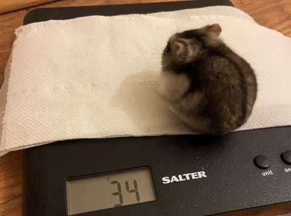

Winter White Hamsters

What I Eat
One of my favorite topics, food!
For a balanced diet we love a mix of grasses, seeds and grains, along with small amounts of vegtables. We are also omnivores and need protein, so feed us things like mealworms, chicken and egg as well
As far as sweet treats go, we can only have tiny amounts as we are prone to dieabeties, so anything sugary should be kept to an absolute minimum!
Treats are a big deal for us and we could happily ingore everything else and munch on sunflower seeds and peanuts all day but this would'nt be very good for us, so dont give us to many.

My ideal weight should between 30 to 45 grams when i'm fully grown, I may even get a few more treats after my last weigh in.
If you want a more detailed list of what we can and can't eat take a look at this guide on Hamster Hideout;
Hamster Hideout Food Guide
Charlotte Forte